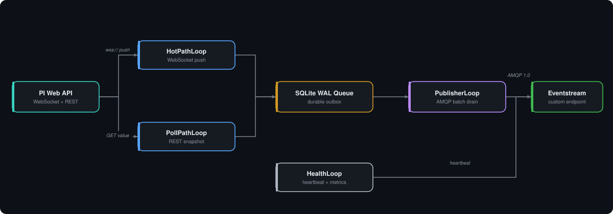
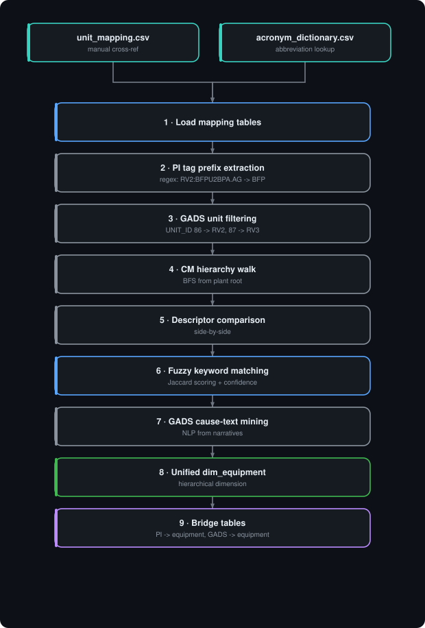

Data Sources
Three primary source systems plus enrichments. Each ingestion path is idempotent and watermarked.
GADS — NERC Outage History
NERC's Generating Availability Data System. Mandatory event reporting for every generation asset above 10 MW. Stored in an Ironhart Energy-hosted Oracle database with ~30 years of history.
Connection
import oracledb
oracledb.init_oracle_client = lambda *_: None # force thin mode
conn = oracledb.connect(user=u, password=p, dsn='oracle.ironhart.com:1521/GADSPROD')Core tables
| Table | Rows (~) | Grain | Key columns |
|---|---|---|---|
GADS_EVENT | 180 K | Event | EVENT_ID, EQUIP_ID, START_DT, END_DT, CAUSE_CODE, EVENT_TYPE |
GADS_EQUIPMENT | 1.2 K | Asset | EQUIP_ID, UNIT_ID, COMPONENT, MFG, MODEL |
GADS_CAUSE_CODE | 4 K | Code | CAUSE_CODE, CATEGORY, DESCRIPTION |
GADS_UNIT | 250 | Unit | UNIT_ID, NAME, NET_CAP_MW, COMM_DT |
Event type taxonomy
- U1 / U2 / U3 — Forced outage (immediate / next-shift / next-24-h).
- MO — Maintenance outage (planned but not annual).
- PO — Planned outage (annual overhaul).
- SF — Startup failure.
- D1–D4 — Forced derating (partial output loss).
The classifier label is any of {U1, U2, U3, D1, D2, D3, D4} occurring within the horizon.
Condition Monitoring
Ironhart Energy's enterprise condition-monitoring system, SQL Server backed. Captures inspection routes (vibration, oil, thermography, ultrasound), findings, work-order links, and a curated asset hierarchy.
Connection
jdbc:sqlserver://cmsql01\\CM;databaseName=CMPROD;integratedSecurity=trueHierarchy
Site (Riverton)
└── Unit (U2 / U3)
└── System (Boiler / Steam Turbine / BFP)
└── Equipment (named asset)
└── Measurement Point (bearing #1, drum N2, etc.)Key tables
| Table | Purpose |
|---|---|
AssetHierarchy | Tree closure table; each row carries parent + level. |
Inspection | Header per route execution (date, technician, route ID). |
Finding | One row per anomaly noted; severity 1–5, finding type, narrative. |
VibrationReading | Spectral + overall values keyed to measurement point. |
WorkOrder | Links findings to CMMS work orders. |
PI Server — Process Historian
OSIsoft PI 2018 SP3. Hostname PIHIST01\\PIDATA01. ~645 tags in scope across the three target assets, spanning process variables, vibration overalls, lube oil temps, motor currents.
Tag naming convention
Most tags follow LGn:<system><tagcode>.<unit> where n = unit number.
| Example tag | Asset | Description |
|---|---|---|
RV2:BTPU2BPDRUM.AG | U2 Boiler | Boiler drum pressure (psig). |
RV3:FWFU3WF20X.AG | U3 BFP East | Feedwater flow (klb/hr). |
RV3:TBPU3HPVB1.AG | U3 Steam Turbine | HP turbine bearing #1 vibration (mil pp). |
RV3:LOTU3MNJB.AG | U3 Steam Turbine | Main journal bearing lube oil temp (°F). |
RV2:GENU2MWNET.AG | U2 Generator | Net generation (MW). |
Sampling
Raw cadence varies (1 s to 1 min). Historical backfill uses PI Web API's /streams/{webId}/recorded endpoint with boundaryType=Inside to pull archived values in resumable, chunked windows. Recorded values preserve the original timestamps and exception-deviation compression — no interpolation is applied at extraction. The 15-minute binning (mean / p95 / std / count) happens downstream in Silver.
# Historical extraction via PI Web API (PowerShell)
# Save-PIRecordedValues.ps1 — chunked, resumable pulls
$url = "$BaseUrl/streams/$WebId/recorded?startTime=$start&endTime=$end&boundaryType=Inside&maxCount=150000"
$resp = Invoke-PIWebApi -Url $url -Credential $credPIFabricForwarder — Real-Time Bridge to Fabric
A .NET 8 Windows Service that streams PI tag values into Fabric Eventstream in real time. It replaces the batch nb_extract_pi_incremental notebook for the hot path, reducing end-to-end latency from ~1 hour to seconds.
Architecture
The service runs four concurrent BackgroundService loops, coordinated through a shared SQLite WAL queue that acts as a durable outbox:

The Four Loops
| Loop | Class | What It Does |
|---|---|---|
| HotPath | HotPathLoop |
Opens persistent WebSocket connections to PI Web API's /streamsets/channel endpoint. Tags are split into groups of up to 250 (configurable via ChannelGroupSize). Each group gets its own PiChannelSubscriber running an independent WebSocket with exponential backoff reconnect (1s → 60s max). As PI pushes new archive events, the subscriber parses the JSON envelope, extracts timestamp/value/quality, and enqueues into SQLite. |
| PollPath | PollPathLoop |
Fallback for tags that don't work well with channels (e.g., digital states, slow-update tags). Polls PI Web API's /streamsets/value REST endpoint at a configurable interval (default 5s). Uses PiStreamSetsPoller to batch-GET current values and enqueue changes to SQLite. |
| Publisher | PublisherLoop |
Drains the SQLite queue into Fabric Eventstream. Peeks a batch (up to 1000 events / 256 KB), sends via EventHubProducerClient (AMQP 1.0), then deletes from SQLite only after broker acknowledgment (delete-after-ack). Exponential backoff on failures (500ms → 30s). Idle polls at FlushIntervalMs (50ms default). |
| Health | HealthLoop |
Emits a heartbeat event every 30s directly to Eventstream (bypasses queue). Payload includes queue depth, queue bytes, active WebSocket channel count, publish rate/sec, and failure count. A Fabric Reflex/Activator rule monitors for missing heartbeats. |
SQLite WAL Queue — Durable Outbox
The queue is the critical resilience mechanism. If Fabric is down, events accumulate in SQLite (up to 20 GB / 500K rows before backpressure stops ingestion). When connectivity resumes, the publisher drains the backlog automatically. Key design choices:
- WAL journal mode — concurrent reads (publisher peeks) and writes (HotPath/PollPath enqueue) without blocking
- Delete-after-ack — rows stay in
pendingtable until the AMQP broker confirms receipt - Backpressure — warns at 50K rows, stops ingestion at 500K to prevent disk exhaustion
- Queue path:
C:\ProgramData\PIFabricForwarder\queue.db
Tag Registry
Tags are loaded at startup from tags.json. Each tag entry specifies the PI Web API webId, tag name, plant code, and ingestion mode (Channel, Poll, or Skip). Changes require a service restart (hot reload is planned). Tags are de-duplicated by webId at load time.
Authentication & Transport
| Connection | Auth Method | Transport |
|---|---|---|
| PI Web API | Windows Integrated (Kerberos via UseDefaultCredentials) | WSS (WebSocket) + HTTPS (REST) |
| Fabric Eventstream | Entra ID certificate-based (ClientCertificateCredential) or connection string for testing | AMQP 1.0 over WebSockets |
Configuration
// appsettings.json — key settings
{
"PiWebApi": {
"BaseUrl": "https://pireporting-gms.ironhart.com/piwebapi",
"DataServer": "RVPIHIST01",
"PollIntervalSeconds": 5,
"ChannelGroupSize": 250
},
"Fabric": {
"FabricNamespaceFqdn": "....servicebus.fabric.microsoft.com",
"StreamName": "pi-events-stream",
"MaxBatchEvents": 1000,
"MaxBatchBytes": 262144,
"FlushIntervalMs": 50,
"UseAmqpWebSockets": true
},
"Queue": {
"Path": "C:\\ProgramData\\PIFabricForwarder\\queue.db",
"MaxSizeMB": 20480,
"BackpressureWarnDepth": 50000,
"BackpressureStopDepth": 500000
},
"Health": { "HeartbeatIntervalSeconds": 30 }
}Event Schema
Each event published to Eventstream is a JSON object:
{
"webId": "P0...",
"tag": "RV2:BTPU2BPDRUM.AG",
"plant": "RV2",
"source": "channel", // or "poll"
"ts": "2026-06-10T12:00:01-05:00",
"value": 1482.3,
"questionable": false,
"substituted": false,
"valueType": "PSIG"
}Deployment
Published as a self-contained .NET 8 executable, installed as Windows Service PIFabricForwarder on the plant data server. Runs under a service account with PI read permissions and access to the Entra app registration certificate.
Equipment Mapping — Unified Cross-System Dimension
Three source systems, three different equipment vocabularies. The DimensionMapping-Discovery notebook (open in Fabric) builds a unified dim_equipment dimension that maps PI tags, GADS events, and condition-monitoring measurements to a single equipment hierarchy.
The problem
Each source system identifies equipment differently. Without a cross-reference, you can't correlate a PI vibration reading with the condition-monitoring inspection that flagged the same bearing, or the GADS forced outage that resulted.
| System | Equipment identifier | Example |
|---|---|---|
| PI | Tag name prefix (convention-based) | RV2:BFPU2BPA.AG → prefix BFP |
| condition-monitoring | Hierarchical asset tree (MongoDB ObjectId) | 5e14fa24... → "Boiler Feed Pump A" |
| GADS | Free-text equipment mentions in cause narratives | "BFP tripped due to low suction pressure" |
Pipeline overview

Step 1 — Manual input tables
Two CSV files seeded by SMEs provide the foundation. Stored in Files/DimensionMapping/ and persisted as Delta tables.
| File | Delta table | Purpose |
|---|---|---|
unit_mapping.csv | dim_unit_mapping | Unit-level cross-reference: canonical unit code (RV2, RV3) → PI server prefix, GADS UNIT_ID, condition-monitoring root asset IDs (turbine, boiler, electrical, wcm subtrees). |
acronym_dictionary.csv | dim_acronym_dictionary | Editable abbreviation lookup. Maps plant shorthand (BFP, CWP, FWF, etc.) to full equipment names and categories (equipment, component, system). Used for bidirectional fuzzy matching. |
Step 2 — PI tag prefix extraction
PI tags follow naming conventions like RV2:BFPU2BPA.AG. The notebook extracts an equipment prefix using three cascading regex patterns:
# Pattern 1: Letters before U2/U3 — e.g., BATU2BT05 → "BAT"
equip_prefix_v1 = regexp_extract(tag_body, r"^([A-Z]+?)U[23]", 1)
# Pattern 2: 2+ letters before first digit — e.g., BFPP02A → "BFP"
equip_prefix_v2 = regexp_extract(tag_body, r"^([A-Z]{2,})d", 1)
# Pattern 3: 2+ leading letters — e.g., GENU2MWNET → "GEN"
equip_prefix_v3 = regexp_extract(tag_body, r"^([A-Z]{2,})", 1)Result: each tag gets an equip_prefix (e.g., BFP, GEN, BAT) that groups PI tags by the equipment they monitor.
Step 3 — condition-monitoring hierarchy walk
The condition-monitoring asset tree is traversed via BFS from the Riverton plant root with depth tracking. Each node is assigned a level:
| Level | Meaning | Example |
|---|---|---|
| 0 | Plant root | Riverton |
| 1 | Functional area | Steam Turbine, Boiler, Electrical |
| 2 | Unit / group | Unit 2 Steam Turbine, Unit 3 Boiler |
| 3 | Equipment | Boiler Feed Pump A, HP Turbine Bearing #1 |
| 4+ | Sub-components | Bearing, Seal, Motor |
Unit attribution uses the unit_mapping.csv subtree roots: each condition-monitoring node is traced up its parent chain to determine whether it belongs to RV2 or RV3. Fallback patterns match on name substrings (e.g., "U2", "Unit 3").
Step 4 — Fuzzy keyword matching (PI ↔ condition-monitoring)
The core matching engine uses bidirectional acronym expansion and Jaccard similarity scoring:
- Tokenize — Each PI prefix group's descriptors and each condition-monitoring equipment name are tokenized. Known acronyms are expanded (BFP → {boiler, feed, pump}) and known phrases are collapsed ("boiler feed pump" → BFP).
- Score — Jaccard similarity = |shared tokens| / |union of tokens|. Unit-aware: a PI RV2 prefix only matches condition-monitoring nodes in the RV2 subtree.
- Tier — Matches are classified by confidence:
- High — Jaccard ≥ 0.50 or ≥ 7 shared tokens
- Medium — Jaccard ≥ 0.30 or ≥ 5 shared tokens
- Low — Jaccard ≥ 0.20 or ≥ 4 shared tokens
- Rank — Top-3 condition-monitoring matches per PI prefix are kept. Rank-1 (best) becomes the primary mapping.
Output: dim_pi_to_cm_map (primary mappings) and dim_pi_to_cm_candidates (ranked alternatives).
Step 5 — GADS cause-text mining
GADS EQUIPMENT_DESC is mostly empty (3/2246 events). Instead, the notebook mines CAUSE_OF_EVENT free-text narratives for equipment references:
- For each GADS event, scan the combined
CAUSE_OF_EVENT + EQUIPMENT_DESCtext for known equipment acronyms (whole-word boundary match) or their full expansions. - A stable
event_uidis computed as SHA-256 of business key columns to avoid duplicates. - Matched acronyms are cross-referenced to the
gads_equip_typecatalog via fuzzy LIKE joins. - Unmatched events are persisted to
dim_gads_unmatched_eventsfor SME review.
Output: dim_gads_event_equipment (event → equipment mapping) and dim_gads_event_equipment_xref (with GADS equipment catalog links).
Step 6 — Unified dim_equipment table
The final output is a canonical hierarchical equipment dimension — one row per condition-monitoring node under Riverton, enriched with PI and GADS cross-references.
| Column group | Key columns | Purpose |
|---|---|---|
| Identity | cm_id, equipment_name, parent_cm_id | Natural key + self-referencing tree edge |
| Hierarchy | level, level0_name…level5_name, full_path | Materialized ancestor names for drill-down slicers. E.g., "Riverton > RV2 > Boiler > BFP A" |
| Plant | plant | RV2 / RV3 / null (shared) |
| Structural | child_count, descendant_count, is_leaf | Rollup helpers for aggregation |
| PI coverage | pi_prefixes_direct, pi_tag_count_direct, pi_prefixes_rollup, pi_tag_count_rollup | Direct = tags mapped to this exact node. Rollup = including all descendants. |
| GADS coverage | gads_acronyms_direct, gads_event_count_direct, gads_acronyms_rollup, gads_event_count_rollup | Equipment acronyms matched strictly (literal word boundary or multi-word phrase) + event counts |
| Match quality | best_pi_match_confidence, best_pi_match_jaccard | Confidence tier and Jaccard score of the best PI link |
Bridge tables for fact joins
Two bridge tables enable star-schema joins from fact tables to dim_equipment:
| Bridge table | Join path |
|---|---|
bridge_pi_tag_to_equipment | fact_pi_value.Tag → bridge.Tag → bridge.cm_id → dim_equipment |
dim_gads_event_equipment | fact_gads_events.event_uid → dim_gads.event_uid → dim_gads.cm_id → dim_equipment |
| (direct) | fact_cm.AssetId → dim_equipment.cm_id |
GADS acronym resolution
After building dim_equipment, the notebook resolves each GADS match to a specific condition-monitoring equipment node. When multiple nodes carry the same acronym in the same plant, it picks the most specific node (highest hierarchy level, smallest descendant count) using a windowed rank.
Key design decisions
- condition-monitoring as the spine — condition-monitoring has the richest equipment hierarchy, so it serves as the backbone. PI and GADS are mapped onto condition-monitoring nodes.
- Strict GADS attribution — Each node's own name (not parent context) is matched. Single-word expansions (e.g., "pump") never match by expansion alone — only if the abbreviation (e.g., "BFP") appears as a whole word in the name. Prevents false cascading matches.
- Direct vs. rollup — Direct mappings show exactly which node a PI tag or GADS event maps to. Rollup aggregates up the tree, so a unit-level node shows total PI tags and GADS events across all its sub-equipment.
- Human-in-the-loop — Low-confidence matches and unmatched GADS events are persisted for SME review. The acronym dictionary is editable CSV, not hardcoded.
Extraction Notebooks
| Notebook | Source | Cadence |
|---|---|---|
nb_extract_gads_full | Oracle GADS | One-time backfill + daily incremental on EVENT.MOD_DT |
nb_extract_cm_full | condition-monitoring SQL | Daily CDC watermark on Finding.CreatedDt |
nb_extract_pi_backfill | PI Web API | One-time for historical via /recorded, chunked 30 days at a time |
nb_extract_pi_incremental | PI Web API | Hourly via /recorded, watermark on snapshot timestamp |
The real-time path supersedes nb_extract_pi_incremental via PIFabricForwarder — see Real-Time.
Data Quality Rules
- GADS: reject events with END_DT < START_DT (data entry error); coalesce
0001-01-01open-ended events to NULL. - condition-monitoring: dedupe Findings on (AssetID, FindingDt, FindingType) — multiple technicians sometimes log the same observation.
- PI: drop samples flagged with PI
BadorI/O Timeoutstatus; forward-fill gaps < 5 minutes in Silver.
ISO outage portal — Outage Coordination
the ISO/RTO's Control Room Operations Window provides unit-level outage records for Ironhart Energy's generating fleet. Accessed via automated mTLS (client certificate) against the ISO outage system web portal.
Connection
Host: apps.midwestiso.org
Auth: X.509 client certificate (SSL.com, CN=svc-forwarder)
Protocol: mTLS + ASP.NET WebForms POST
Script: C:\solution\the ISO/RTO\Get-CROWOutages.ps1Data extracted
| Field | Example | Description |
|---|---|---|
outage_id | 1-27502722 | ISO outage system outage tracking number |
station | RVTON | the ISO/RTO station code for Riverton |
unit | G2 / G3 | Generation unit |
priority | Forced / Planned / Urgent | Outage classification |
equipment | RVTON G2 22 Derated to: 385 MW | Equipment and derate level |
start_date / end_date | 04/28/2025 – 04/30/2025 | Outage window |
Coverage
47 outage records (Apr 2025 – Jun 2026): 28 for Unit 2 (G2), 19 for Unit 3 (G3). Includes 25 full OOS events and 22 derates with specific MW caps. Data lands in Eventhouse CROWOutages table for cross-referencing with model predictions.
Legacy APM engine — Anomaly Benchmark
GE Digital's legacy APM system provides the production benchmark for anomaly detection. The solution extracts incidents, diagnostics, and observations via the legacy APM .NET SDK running against the engine server.
Connection
Server: FOSWLS1P
Auth: WCF service (SecurityMode=None, user/password)
SDK: .NET Framework legacy APM.Client assemblies via PowerShell reflection
Script: C:\solution\legacy APMSDK\Get-legacy APMData.ps1Extraction scripts
| Script | Purpose | Cadence |
|---|---|---|
Get-legacy APMData.ps1 | Active incidents + diagnostics + observations | Scheduled (daily) |
Get-legacy APMHistorical.ps1 | 2-year historical backfill | One-time |
Get-legacy APMObservations.ps1 | Advisory observation detail with rule-tag rows | On-demand |
Eventhouse tables
| Table | Description |
|---|---|
Legacy APMIncidentsRaw | Incident records with tag, priority, actual/expected/residual values |
Legacy APMDiagnosticsRaw | Contributing tag analysis per incident |
Legacy APMObservationsRaw | Rule-firing observation events with timestamps |